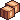

Overview
Action
With an activity selected each step results in one unit of work, increased by Work Efficiency (WE).
Every completed action gives you Skill Experience (XP), rolls available loot tables, grants available rewards (faction reputation), and consumes a material when applicable.
Cooldowns and consumables only progress on non-doubled actions.
Step Bank
Saved Steps
With no activity selected all steps go to the step bank. Cancelling an action returns "spent" steps to the bank. Your steps aren't wasted even if you forget to start an activity.
Saved steps get spent for each real step taken, doubling your speed! There is no other way to spend saved steps.
Double Action (DA)
DA gives a chance to complete a second action for FREE. A Doubled-action can't trigger a second one.
Stat Caps
DA +100%
DR +100%
NMC +100%
WE Varies
Pet Experience
Gained pet XP is the sum of walked steps and saved steps. It is not affected by other bonuses.
Loot Tables
Activities can have multiple loot tables: main, chests, collectibles.
Some items like Treasure Grabber also add a loot table.

Double Rewards (DR)
If DR procs on a loot table, it gets rolled twice. Each roll can give a different outcome. For recipes it gives an additional item.
No Materials Consumed (NMC)
NMC prevents recipe materials from being consumed.
Progress on completed action
Cooldowns, consumables, and pet experience only progress when an action completes.
An unfinished action doesn't consume consumable steps, grant pet XP, or progress cooldowns.